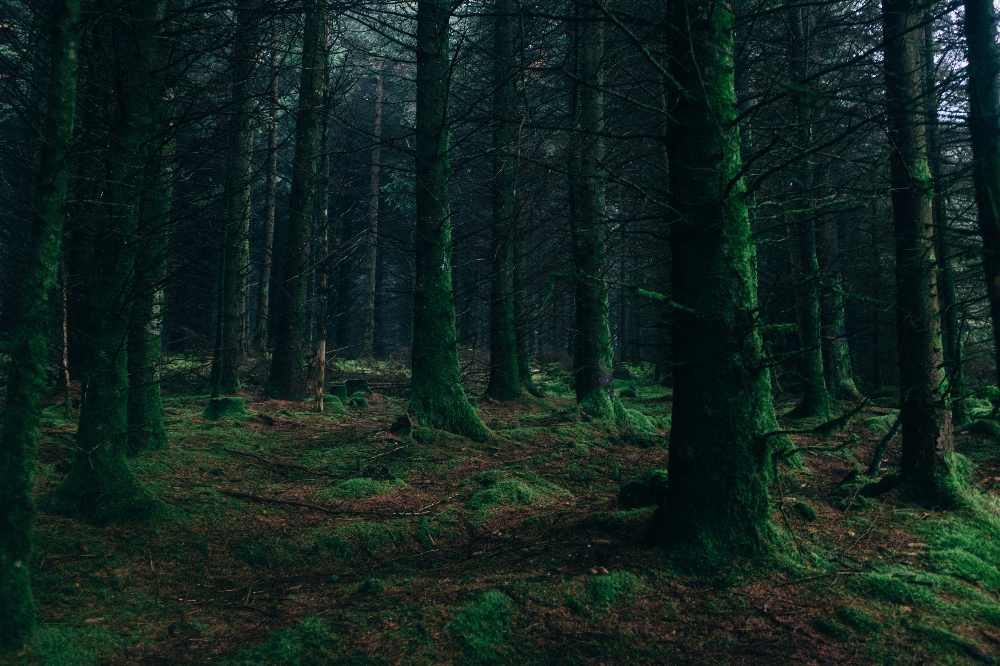

Ülsz az autóba és telnek a percek. Egyre hidegebb van és mindened sajog. Messziről hallod az autók zaját. A zuhanásod a domboldalról már 2 és fél óraja történt. Szúnyogokat csapkodsz folyamatosan, amelyek már lassan megőrítenek. Sötétedik. Az állatok egyre aktívabbak a környező erdőben.
Megvizsgálod az autódat és a nyomvonalat amit hagyott. Megtalálod az elsősegélykészletdet, egy zseblámpát és a jobboldalból kiszakadt B oszlop egy részét. Az állatok ellen ennek hasznát veheted.
Tekintve, hogy segítség azóta nem jött, elindulsz, hogy megkeresd azt a házat amit még világosnál láttál. Az erdő nagyon sötét és a zseblámpád nem ad elég fényt. Órákig bolyongsz, nem lelsz ember alkotta struktúrát. A tücskök szokásos éjjeli koncerjüket adják. A levegő enyhén csípős. A légmozgás erősebb a megszokottnál. Ledőlsz egy fa tövében és elalszol. Nem aludhatsz túl sokat, mivel mikor felkelsz még mindig sötét van. Valamiféle élőlény mászkál körülötted és furcsa hangot ad ki. Mikor elég közel jön rávágsz egyet a B oszloppal. Visítva rohan el, be a bozótba.